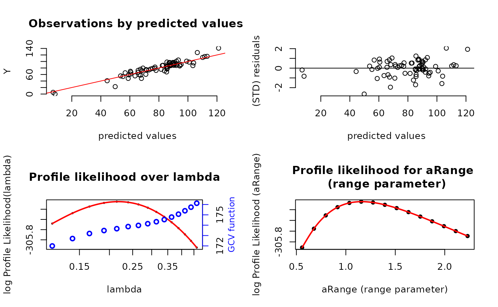
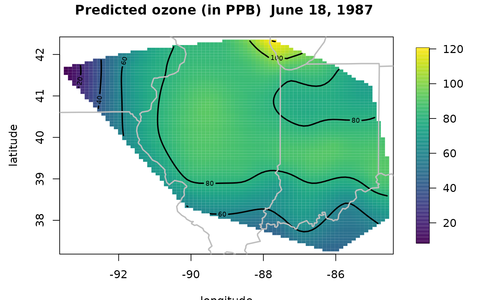
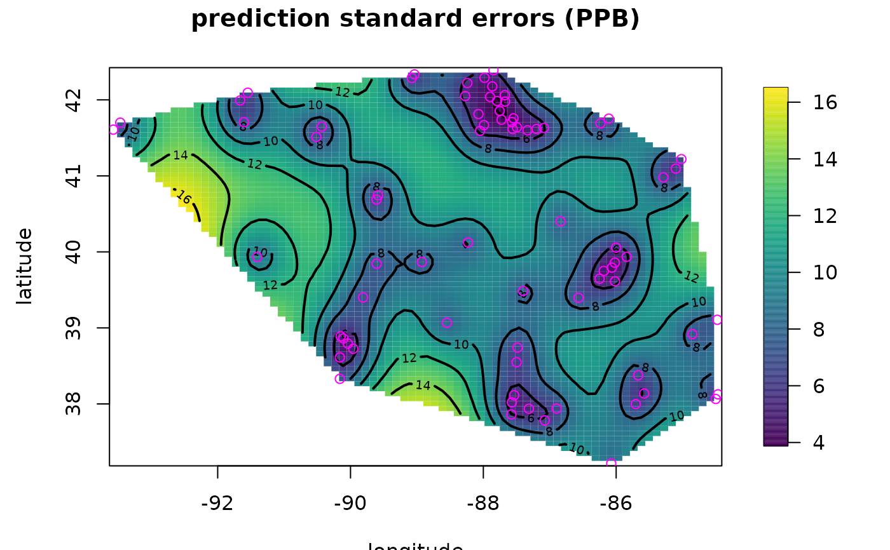

spatialProcess.RdFor a given covariance function estimates the covariance parameters by maximum likelihood and then evaluates the spatial model with these estimated parameters. The returned object can be used for spatial prediction, conditional simulation, and profiling the likelihood function. For fixed values of the covariance parameters this process estimate is also known as Kriging.
spatialProcess(x, y, weights = rep(1, nrow(x)), Z = NULL,
mKrig.args = NULL,
cov.function = NULL,
cov.args = NULL,
parGrid = NULL,
reltol = 1e-4,
na.rm = TRUE,
verbose = FALSE,
REML = FALSE,
cov.params.start = NULL,
gridN = 5,
profileLambda = FALSE,
profileARange = FALSE,
profileGridN = 15,
gridARange = NULL,
gridLambda = NULL,
CILevel= .95,
iseed = 303,
...)
# S3 method for spatialProcess
summary(object, ...)
# S3 method for spatialProcess
print(x, digits = 4, ...)
# S3 method for spatialProcessSummary
print(x, digits = 4, ...)
# S3 method for spatialProcess
plot(x, digits = 4, which = 1:4, ...)
spatialProcessSetDefaults(x, cov.function, cov.args, cov.params.start, parGrid,
mKrig.args, extraArgs = NULL, gridN = 5, verbose =
FALSE)
confidenceIntervalMLE( obj, CILevel, verbose=FALSE)
profileMLE (obj, parName, parGrid=NULL, gridN=15,
cov.params.start=NULL, GCV=FALSE, REML=FALSE,
verbose=FALSE)Observation locations
Observation values
Weights for the error term (nugget) in units of reciprocal variance.
A matrix of extra covariates for the fixed part of spatial model. E.g. elevation for fitting climate data over space.
Confidence level for intervals for the estimated parameters.
A list specifying parameters and other components of the covariance function. Default is not extra arguments required.] (But see the next item.).
A character string giving the name of the
covariance function
for the spatial component.
If NULL, the default, this is filled in as
stationary.cov and then
if cov.args is also NULL this is filled in as
list(Covariance = "Matern", smoothness = 1.0) by the spatialProcessSetDefaults
function.
A list where the names are parameter names that appear in the covariance function. The values of each component are assumed to be the starting values when optimizing to find MLEs. If lambda does not appear as additional argument when calling spatialProcess it is added internally to this list with the starting value .5.
Number of significant digits in printed summary
Extra arguments passed using the ... device in R.
Typically these are extra covariance parameters specified in
spatialProcess and then passed to
spatialProcessSetDefaults
A future argument not currently implemented. If TRUE will find parameters by minimizing an approximate generalized cross-validation function.
A grid for profiling over the range parameter. If omitted, default is based on a grid of profileGridN points centered at the MLE.
A grid for profiling over lambda.
Number of grid points for intital fgrid search to find starting values.
If TRUE NAs are removed from the data.
Arguments as a list passed to the mKrig function. For example use
mKrig.args=list( m = 1) to set the fixed part of the model to just a constant function ,
or 0 to omit any fixed part. (The default is m=2 a linear function, which is recommend for most data analysis.) See mKrig for more details.
A spatialProcess object returned from the spatialProcess function.
See obj.
A data frame with the values of covariance parameters to use as an initial grid search for starting values.
Text string that is the name of the parameter to profile .
If TRUE profile likelihood on aRange. Default is TRUE if aRange is omitted.
Number of grid points to use for profiling.
If TRUE profile likelihood on lambda. This takes extra time and is not necessary so the default is FALSE.
Relative tolerance used in optim for convergence.
If TRUE the parameters are found by restricted maximum likelihood.
If TRUE print out intermediate information for debugging.
A seed to fix the random number stream used to compute the effective degrees of freedom using the random trace method. Setting this seed will not affect any random numnber generation outside this function.
Any other arguments that will be passed to the mKrig function and interpreted
as additional arguments to the covariance function. This is a lazy way of specifying these.
E.g. aRange =.1 will set the covariance argument aRange to .1.
The vector 1:4 or any subset of 1:4, giving the plots to draw. See the description of these plots below.
This function makes many choices for the user in terms of defaults and it is important to be aware of these. The spatial model is
Y.k= P(x.k) + Z(x.k)%*%beta2 + g(x.k) + e.k
where ".k" means subscripted by k, Y.k is the dependent variable
observed at location x.k. P is a low degree polynomial (default is a
linear function in the spatial coordinates, m=2 ) and Z is a
matrix of covariates (optional) that
enter as a linear model the fixed part. g is a mean zero,
Gaussian stochastic process with a marginal variance of sigma and a
scale (or range) parameter, aRange. The measurement errors, e.k, are
assumed to be uncorrelated, normally distributed with mean zero and
standard deviation tau. If weights are supplied then the variance of e is assumed to be
tau^2/ weights. The polynomial if specified and extra covariates define
the fixed part of this spatial model and the coefficients are found by
generalized least squares (GLS).
Perhaps the most important aspect of this function is that the range parameter (aRange), nugget (tau**2) and process variance (sigma) parameters for the covariance are estimated by maximum likelihood and this is the model that is then used for spatial prediction. Geostatistics usually refers to tau^2 + sigma^2 as the "sill" and often these parameters are estimated by variogram fitting rather than maximum likelihood. To be consistent with spline models and to focus on the key part of model we reparametrize as lambda= tau**2/ sigma^2 and sigma. Thinking about h as the spatial signal and e as the noise 1/lambda can be interpreted as the "signal to noise " ratio in this spatial context.(See also the comparison with fitting the geoR model in the examples section.)
For an isotropic covariance function, the likelihood and the cross-validation function can be concentrated to only depend on lambda and aRange and so in reporting the optimization of these two criterion we focus on this form of the parameters. Once lambda and aRange are found, the MLE for sigma has a closed form and of course then tau is then determined from lambda and sigma. The estimates of the coefficients for the fixed part of the model, determined by GLS, will also be the MLEs.
Often the lambda parameter is difficult to interpret when covariates and a linear function of the coordinates is included and also when the range becomes large relative to the size of the spatial domain. For this reason it is convenient to report the effective degrees of freedom (also referred to trA in R code and the output summaries) associated with the predicted surface or curve. This measure has a one-to-one relationship with lambda and is easier to interpret. For example an eff degrees of freedom that is very small suggests that the surface is well represented by a low order polynomial. Degrees of freedom close to the number of locations indicates a surface that is close to interpolating the observations and suggests a small or zero value for the nugget variance.
The default covariance model is assumed to follow a Matern
with smoothness set to 1.0. This is implemented using the
stationary.cov covariance that can take a argument for
the form of the covariance, a sill and range parameters and
possibly additional parameter might control the shape.
See the example below how to switch to another model. (Note that the exponential is also part of the Matern family with smoothness set to .5. )
The parameter estimation is done by MLESpatialProcess
and the returned list from this function is added to the Krig
output object that is returned by this function. The estimate
is a version of maximum likelihood where the observations are
transformed to remove the fixed linear part of the model. If
the user just wants to fix the range parameter aRange then
Krig can be used.
NOTE: The defaults for the optim function used in MLESpatialProcess are:
list(method = "BFGS",
control=list(fnscale = -1,
ndeps = rep(log(1.1),length(cov.params.start)+1),
reltol = reltol,
maxit = 20))There is always a hazard in providing a simple to use method that makes many default choices for the spatial model. As in any analysis be aware of these choices and try alternative models and parameter values to assess the robustness of your conclusions. Also examine the residuals to check the adequacy of the fit. See the examples below for some help in how to do this easily in fields. Also see quilt.plot to get an quick plot of a spatial field to discern obvious spatial patterns.
summary method forms a list of class spatialProcessSummary that has a
subset of information from the output object and also creates a table of the estimates
of the linear parameters in the fixed part of the model.
With replicated fields there is an option to estimate different linear parameters for each field
( collapseFixedEffect = FALSE ) and in this case a table is not created because
there is more than one estimate. See (Omega and fixedEffectsCov) in the
mKrig object to build the standard errors.
plot method provides potentially four diagnostic plots of the fit.Use the which
to pick and choose among them
or use set.panel to see them all.
The third and fourth plots, however, are only available if the profile computations been done.
If lambda is profiled (lambdaProfile is not
NULL ) the third plot is the profile log
likelihood for lambda and with the GCV function on a
second vertical scale.
This is based on the grid evaluations in the component
lambdaProfile\$MLEProfileLambda .
The fourth
plot is a profile log likelihood trace for aRange
based on aRangeProfile\$MLEProfileLambda.
print method prints the spatialProcessSummary object of the fit, adding
some details and explanations.
spatialProcessSetDefaults This is a useful way to fill in defaults for the function in one place. The main choices are choosing the Matern family, smoothness and a default fixed model (aka spatial drift). The grids for profiling are also created if they have not been supplied.
An object of classes mKrig and SpatialProcess. The difference
from mKrig are some extra components. The more useful ones are listed below
MLESummary A named array that has the fixed and estimated parameters along with likelihood values and some optim info.
profileSummaryLambda and profileSummaryARange The output list from mKrigMLEGrid for searching over over a grid of lambda and aRange.
CITable Approximate confidence intervals based on the inverse hessian of the log likelihood function.
MLEInfo A list that has a full documentation of the maximization including all parameters and likelihood values that were tried by the optim function.
InitialGridSearch Results from initial grid search to get good starting values for lambda and/or aRange.
data( ozone2)
# x is a two column matrix where each row is a location in lon/lat
# coordinates
x<- ozone2$lon.lat
# y is a vector of ozone measurements at day 16. Note some missing values.
y<- ozone2$y[16,]
# artifically reduce size of data for a quick example to pass CRAN ...
x<- x[1:75,]
y<- y[1:75]
# lots of default choices made here -- see gridN to increase
# the number of points in grid searches for MLEs
# without specifying lambda or aRange both are found in a robust
# way uses grid searches
# profiling over lambda and aRange is not reuqired but completes the full
# example. Omit this for a faster computation.
obj<- spatialProcess( x, y, profileLambda=TRUE, profileARange=TRUE)
# summary of model
summary( obj)
#> CALL:
#> spatialProcess(x = x, y = y, profileLambda = TRUE, profileARange = TRUE)
#>
#> SUMMARY OF MODEL FIT:
#>
#> Number of Observations: 74
#> Degree of polynomial in fixed part: 1
#> Total number of parameters in fixed part: 3
#> sigma Process stan. dev: 21.27
#> tau Nugget stan. dev: 10.22
#> lambda tau^2/sigma^2: 0.2311
#> aRange parameter (in units of distance): 1.115
#> Approx. degrees of freedom for curve 28.02
#> Standard Error of df estimate: 1.312
#> log Likelihood: -305.056427482396
#> log Likelihood REML: -309.414430504448
#>
#> ESTIMATED COEFFICIENTS FOR FIXED PART:
#>
#> estimate SE pValue
#> d1 345.800 272.500 0.20440
#> d2 7.027 3.044 0.02099
#> d3 8.484 4.636 0.06723
#>
#> COVARIANCE MODEL: stationary.cov
#> Covariance function: Matern
#> Non-default covariance arguments and their values
#> Covariance :
#> [1] "Matern"
#> smoothness :
#> [1] 1
#> aRange :
#> [1] 1.115425
#> onlyUpper :
#> [1] FALSE
#> distMat :
#> [1] NA
#> Nonzero entries in covariance matrix 5476
#>
#> SUMMARY FROM Max. Likelihood ESTIMATION:
#> Parameters found from optim:
#> lambda aRange
#> 0.2311332 1.1154248
#> Approx. confidence intervals for MLE(s)
#> lower95% upper95%
#> lambda 0.08870229 0.6022682
#> aRange 0.48240121 2.5791239
#>
#> Note: MLEs for tau and sigma found analytically from lambda
#>
#> Summary from estimation:
#> lnProfileLike.FULL lnProfileREML.FULL lnLike.FULL lnREML.FULL
#> -305.0564275 -309.4144305 NA NA
#> lambda tau sigma2 aRange
#> 0.2311332 10.2249266 452.3327549 1.1154248
#> eff.df GCV
#> 28.0164893 174.0036602
# diagnostic plots
set.panel(2,2)
#> plot window will lay out plots in a 2 by 2 matrix
plot(obj)

# plot 1 data vs. predicted values
# plot 2 residuals vs. predicted
# plot 3 criteria to select the smoothing
# parameter lambda = tau^2 / sigma
# the x axis has log10 lambda
# Note that here the GCV function is minimized
# while the log profile likelihood is maximzed.
# plot 4 the log profile likelihood used to
# determine range parameter aRange.
#
set.panel()
#> plot window will lay out plots in a 1 by 1 matrix
# predictions on a grid
surface( obj, xlab="longitude", ylab="latitude")
US( add=TRUE, col="grey", lwd=2)
title("Predicted ozone (in PPB) June 18, 1987 ")

#(see also predictSurface for more control on evaluation grid, predicting
# outside convex hull of the data. and plotting)
# prediction standard errors, note two steps now to generate
# and then plot surface
look<- predictSurfaceSE( obj)
surface( look, xlab="longitude", ylab="latitude")
points( x, col="magenta")
title("prediction standard errors (PPB)")

# here is a sanity check -- call spatialProcess with the MLEs found
# above, better get the same predictions!
objTest<- spatialProcess( x, y,
lambda=obj$MLESummary["lambda"],
aRange=obj$MLESummary["aRange"]
)
test.for.zero(objTest$fitted.values, obj$fitted.values,
tag="sanity check" )
#> Testing: sanity check
#> PASSED test at tolerance 1e-08
if (FALSE) {
##################################
# working with covariates and filling in missing station data
# using an ensemble method
# see the example under help(sim.spatialProcess) to see how to
# handle a conditional simulation on a grid of predictions with
# covariates.
data(COmonthlyMet)
fit1E<- spatialProcess(CO.loc,CO.tmin.MAM.climate, Z=CO.elev,
profileLambda=TRUE, profileARange=TRUE
)
set.panel( 2,2)
plot( fit1E)
set.panel(1,2)
# plots of the fitted surface and surface of prediction standard errors
out.p<-predictSurface( fit1E,CO.Grid,
ZGrid= CO.elevGrid, extrap=TRUE)
imagePlot( out.p, col=larry.colors())
US(add=TRUE, col="grey")
contour( CO.elevGrid, add=TRUE, levels=seq(1000,3000,,5), col="black")
title("Average Spring daily min. temp in CO")
out.p2<-predictSurfaceSE( fit1E,CO.Grid,
ZGrid= CO.elevGrid,
extrap=TRUE, verbose=FALSE)
imagePlot( out.p2, col=larry.colors())
US(add=TRUE, col="grey")
points( fit1E$x, pch=".")
title("Prediction SE")
set.panel()
}
if (FALSE) {
###################################
# conditional simulation
###################################
# first a small application at missing data
notThere<- is.na(CO.tmin.MAM.climate )
xp <- CO.loc[notThere,]
Zp <- CO.elev[notThere]
infill<- sim.spatialProcess( fit1E, xp=xp,
Z= Zp, M= 10)
dim( infill)
#
# interpretation is that these infilled values are all equally plausible
# given the observations and also given the estimated covariance model
#
# EXTRA CREDIT: standardize the infilled values to have
# conditional mean and variance from the exact computations
# e.g. predict( fit1E, xp=CO.loc[!good,], Z= CO.elev[!good])
# and predictSE(fit1E, xp=CO.loc[!good,], Z= CO.elev[!good])
# with these standardization one would still preserve the correlations
# among the infilled values that is also important for considering them as a
# multivariate prediction.
# conditional simulation on a grid but not using the covariate of elevation
fit2<- spatialProcess(CO.loc,CO.tmin.MAM.climate,
gridARange= seq(.25, 2.0, length.out=10)
)
# note larger range parameter
# create 2500 grid points using a handy fields function
gridList <- fields.x.to.grid( fit2$x, nx=50,ny=50)
xGrid<- make.surface.grid( gridList)
ensemble<- sim.spatialProcess( fit2, xp=xGrid, M = 6)
# this is an "n^3" computation so increasing the grid size
# can slow things down for computation
# The 6 ensemble members
set.panel( 3,2)
for( k in 1:6){
imagePlot( as.surface( xGrid, ensemble[,k]))
}
set.panel()
}
if (FALSE) {
## changing the covariance model.
data(ozone2)
x<- ozone2$lon.lat
y<- ozone2$y[16,]
# a comparison to using an exponential and Wendland covariance function
# and great circle distance -- just to make range easier to interpret.
obj <- spatialProcess( x, y,
Distance = "rdist.earth")
obj2<- spatialProcess( x, y,
cov.args = list(Covariance = "Exponential"),
Distance = "rdist.earth" )
obj3<- spatialProcess( x, y,
cov.args = list(Covariance = "Wendland",
dimension = 2,
k = 2),
Distance = "rdist.earth")
# obj2 could be also be fit using the argument:
# cov.args = list(Covariance = "Matern", smoothness=.5)
#
# Note very different range parameters - BTW these are in miles
# but similar nugget variances.
rbind( Whittle= obj$summary,
Exp= obj2$summary,
Wendland= obj3$summary
)
# since the exponential is Matern with smoothness == .5 the first two
# fits can be compared in terms of their likelihoods
# the ln likelihood value is slightly higher for obj verses obj2 (-613.9 > -614.9)
# these are the _negative_ log likelihoods so suggests a preference for the
# smoothness = 1.0 (Whittle) model
#
# does it really matter in terms of spatial prediction?
set.panel( 3,1)
surface( obj)
US( add=TRUE)
title("Matern sm= 1.0")
surface( obj2)
US( add=TRUE)
title("Matern sm= .5")
surface( obj3)
US( add=TRUE)
title("Wendland k =2")
# prediction standard errors
# these take a while because prediction errors are based
# directly on the Kriging weight matrix
# see mKrig for an alternative.
set.panel( 2,1)
out.p<- predictSurfaceSE( obj, nx=40,ny=40)
surface( out.p)
US( add=TRUE)
title("Matern sm= 1.0")
points( x, col="magenta")
#
out.p<- predictSurfaceSE( obj, nx=40,ny=40)
surface( out.p)
US( add=TRUE)
points( x, col="magenta")
title("Matern sm= .5")
set.panel(1,1)
}